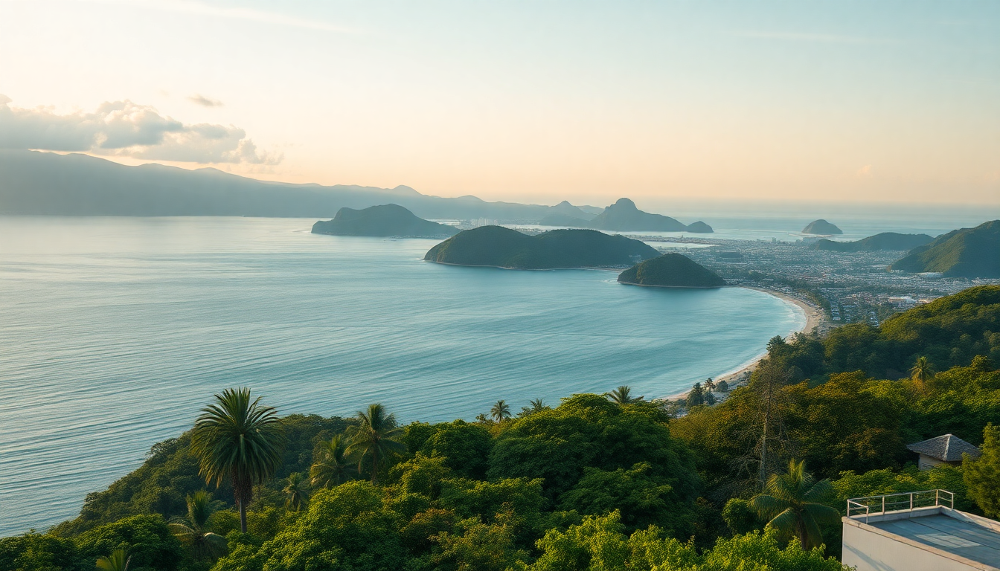

Best Beaches in Colombia: Caribbean & Pacific Coast Guide

I spent three months bouncing between Colombia’s Caribbean and Pacific coasts, and the beach scene is more varied than any guidebook lets on. Some stretches are pure postcard material — others are gritty, crowded, or overpriced. This guide cuts through the noise: which beaches near Cartagena, Santa Marta, and San Andrés are actually worth your time, how to get there without getting ripped off, and what to pack for each coast.
Which beaches near Cartagena are worth the trip?
Cartagena’s city beaches — Bocagrande, Castillogrande — are fine for a quick dip but not why you came to Colombia. The real action is a boat ride or bus away.
Playa Blanca on Isla Barú is the most famous, and it shows. We arrived at 9 a.m. to beat the crush, and by 11 the shoreline was a wall of umbrellas and vendors selling ceviche. The water is that unreal turquoise, but the atmosphere is pure chaos. Worth it for a half-day if you go early; skip if you want solitude.
Islas del Rosario are a better bet for snorkeling. We booked a small group tour through a local operator in Getsemaní — the big catamarans felt like cattle boats. The coral is bleached in spots, but we still saw parrotfish and a sea turtle near the reef.
Punta Arena on Tierra Bomba Island is my sleeper pick. It’s 20 minutes by water taxi from the Muelle de la Bodeguita dock, quieter than Playa Blanca, and the fried fish at Restaurante Donde Lola is the best I had on the coast.
- Playa Blanca — iconic turquoise water, crowded by noon, bring cash for lunch
- Islas del Rosario — better snorkeling, book small-group tours from Getsemaní
- Punta Arena, Tierra Bomba — calm vibes, cheap water taxi, great seafood
What are the best beaches around Santa Marta?
Santa Marta is the launchpad for Tayrona National Park, but the city beaches themselves are rough. Head east.
Cabo San Juan del Guía inside Tayrona is the poster beach — a crescent of sand wedged between jungle and Caribbean, with a wooden deck perched on a rock. We hiked in from the El Zaino entrance (about 2 hours, moderate heat), and the payoff was worth every drop of sweat. The waves here can be strong; don’t swim deep.
Playa Cristal is a quieter Tayrona option, accessible by boat from the park’s Cañaveral sector. The water is glassy and shallow, perfect for floating with a snorkel. We saw more starfish than people.
For something outside the park, Playa Mendihuaca is a long stretch of dark sand with consistent waves — great for bodyboarding. There’s a basic hostel, Casa Colibri, if you want to stay overnight. No ATMs nearby, so bring cash.
- Cabo San Juan del Guía — Tayrona’s iconic beach, hike or horse ride in, strong currents
- Playa Cristal — calm snorkeling, boat access only, arrive early
- Playa Mendihuaca — uncrowded, good for surfing, cash-only zone
Should I visit San Andrés for the beaches?
Yes, but with a caveat: San Andrés is a Colombian island in the Caribbean, and its beaches are genuinely stunning — but the infrastructure is strained. We found the east coast (Playa de San Luis) far more relaxed than the crowded west side near the main town.
Playa de San Luis is a 20-minute taxi from the town of San Andrés. The sand is soft, the water is shallow for about 50 meters out, and there are a half-dozen beachfront restaurants serving fried fish and coconut rice. We spent two days here without getting bored.
Johnny Cay is a tiny island a 10-minute boat ride from the main island. The beach is picture-perfect — white sand, palm groves, calm water — but it gets packed with day-trippers from 11 a.m. onward. Go on a weekday if you can. The snorkeling is decent along the reef edge.
Rocky Cay is our oddball favorite. It’s a small cay you can wade to from the shore at low tide. The water is crystal clear, and the coral gardens just offshore are alive with sergeant majors and angelfish. Bring water shoes — the walk out is over sharp coral rubble.
- Playa de San Luis — relaxed east coast vibe, good food, shallow swimming
- Johnny Cay — postcard looks, busy by midday, best on weekdays
- Rocky Cay — wade-out snorkeling, water shoes essential, quiet
How do the Pacific coast beaches compare?
The Pacific coast is a different beast entirely — rougher water, darker sand, fewer tourists. If you want empty beaches and whale watching, go here. If you want calm swimming and cocktail service, stick to the Caribbean.
Nuquí is the main beach town on the Pacific. We flew into the tiny airstrip from Medellín (50 minutes, one flight a day). The beach itself is a long stretch of gray sand backed by dense jungle. The water is too rough for casual swimming, but the tide pools at low tide are full of tiny crabs and urchins.
Playa Guachalito is about 30 minutes by boat from Nuquí. This is where the humpback whales come between July and October. We saw a mother and calf breach about 200 meters offshore — no tour needed, just sat on the sand. The waves here are strong; don’t plan on swimming far.
El Valle in Chocó is a small village with a river-meets-ocean beach. We hiked from the village to Cascada del Tigre, a waterfall that drops into a freshwater pool a few hundred meters from the sea. The beach is wild and unsupervised, so keep an eye on the tide.
- Nuquí — access by small plane, rough surf, great tide pools
- Playa Guachalito — whale watching July–October, boat access only
- El Valle — waterfall hike, remote beach, strong currents
When is the best time to visit each coast?
The Caribbean coast (Cartagena, Santa Marta, San Andrés) has a dry season from December to April. We went in February and had blue skies every day. The shoulder months of November and May can still be good, with fewer crowds and lower prices. Avoid September and October — that’s when the rain hits hardest.
The Pacific coast flips the script. The dry season runs from December to March, but the whale-watching season (July–October) overlaps with heavy rain. We visited Nuquí in August and got soaked every afternoon, but the whales made it worth it. Bring a rain jacket and quick-dry clothes.
- Caribbean coast — best December–April, shoulder months November and May
- Pacific coast — dry December–March, whale season July–October (rainy)
- San Andrés — similar to Caribbean, but trade winds keep it breezy year-round
How do I get between these beach destinations without wasting time?
Flights are your friend. We made the mistake of taking a bus from Cartagena to Santa Marta (4 hours, $12) — it’s doable but eats a half-day. The better move is a short flight between cities.
Cartagena to Santa Marta — buses run hourly from the Cartagena bus terminal. We used Marsol and it was fine: air-conditioned, on time, $12. The drive is along the coast, but you mostly see scrubland.
Santa Marta to San Andrés — no direct bus (obviously). Fly from Santa Marta’s Simón Bolívar Airport. Avianca and Viva Air both run daily flights, about 1 hour 40 minutes. We paid $90 one-way booking two weeks ahead.
To the Pacific coast — fly from Medellín or Bogotá to Nuquí or Bahía Solano. Satena is the main carrier. The planes are small (19 seats), so book early. We paid $120 one-way from Medellín.
- Cartagena to Santa Marta — 4-hour bus, Marsol or Copetran
- Santa Marta to San Andrés — 1h40m flight, Avianca or Viva Air
- Medellín to Nuquí — 50-minute flight, Satena, book ahead
FAQ
What’s the safest beach for swimming near Cartagena?
Playa Blanca on a calm day is fine for wading, but the currents can pick up. For the safest swimming, head to the shallow coves of Islas del Rosario, especially around Playa Azul. Always ask a local before going deep — the Caribbean coast has sneaky rip currents.
Do I need to bring cash to these beaches?
Yes. Most beach restaurants and water taxis don’t take cards. On San Andrés, ATMs are common in town but rare on the east coast. In Tayrona and Nuquí, cash is king. We carried about 100,000 COP per day for food, transport, and tips.
Can I visit the Pacific coast without flying?
Technically yes, but it’s a grind. You can take a bus from Medellín to Nuquí (12 hours, rough road) or a cargo boat from Buenaventura. We flew and don’t regret it — the road is unpaved for the last two hours and notoriously bumpy.
Conclusion
- For postcard beaches with infrastructure — stick to San Andrés (Playa de San Luis) and Tayrona (Cabo San Juan)
- For easy day trips from Cartagena — Punta Arena on Tierra Bomba beats Playa Blanca for peace and good food
- For empty, wild coastlines — head to the Pacific (Nuquí, Playa Guachalito) but pack for rain and rough surf
- For snorkeling — Rocky Cay in San Andrés and the reefs off Islas del Rosario are your best bets
- For timing — Caribbean coast December–April, Pacific coast for whales July–October with a rain jacket